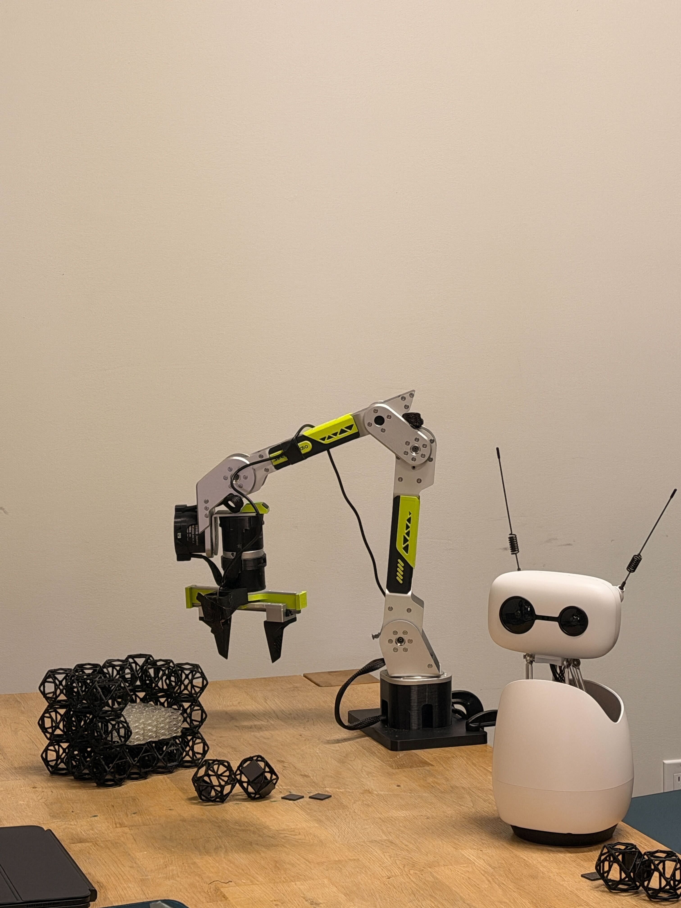
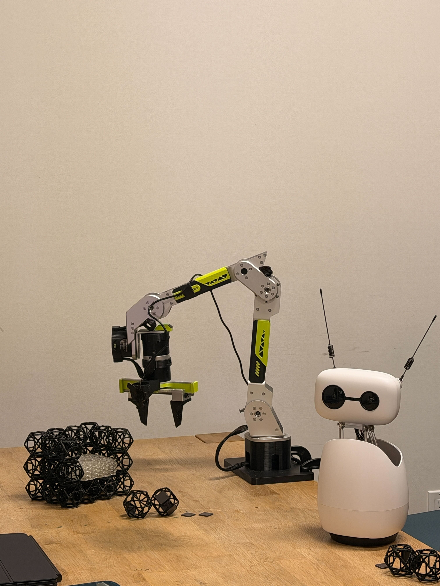
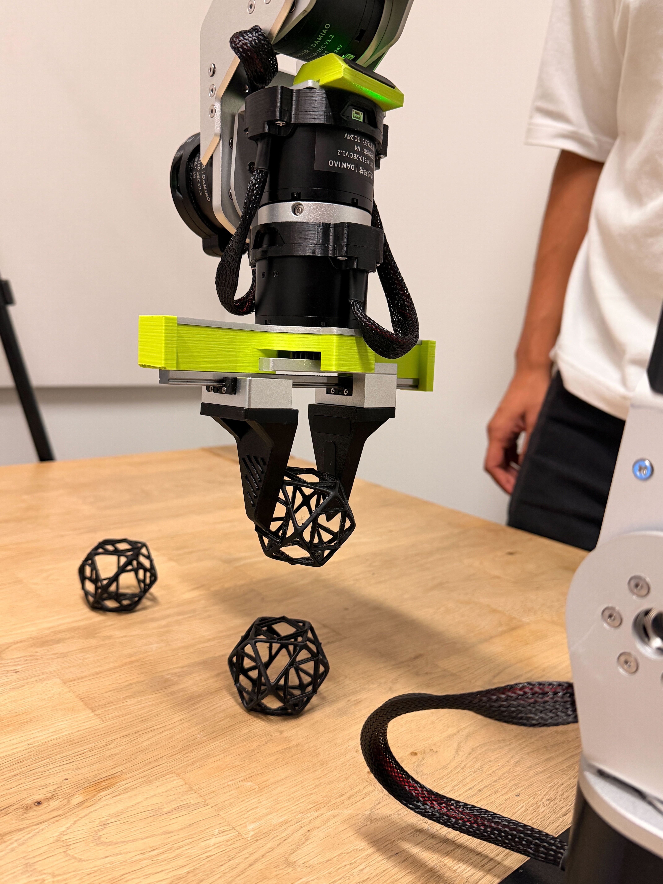
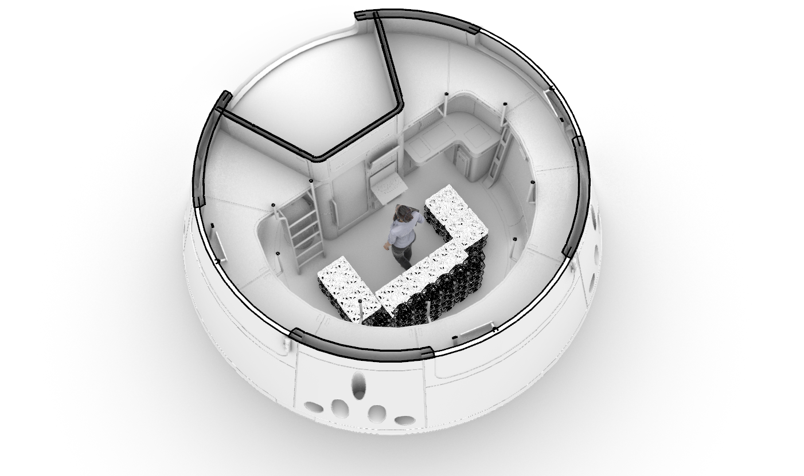
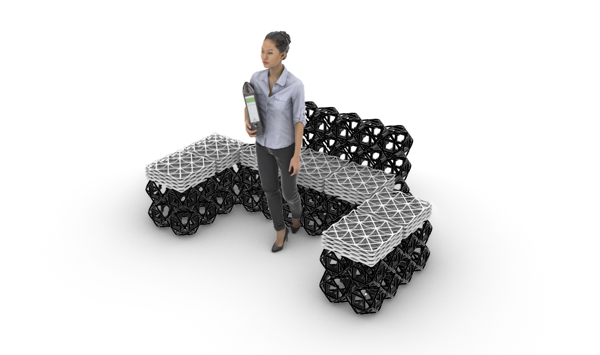

Define block poses
Represent each reconfigurable block by its current pose A and desired pose B in the workspace.
HabitatOS · Hackathon project page
We built a tabletop manipulation workflow where a compact robot arm organizes small assembly parts in a tight workspace using low-cost cameras, teleoperation data, and practical robot-control scripts.
Resource-constrained assembly means doing useful manipulation with limited space, affordable sensors, modest compute, and hardware that has to be easy to deploy.
The video shows a small tabletop cell: loose lattice components, a compact gripper, visual table markers, and a forming structure. It is intentionally not an industrial robot cage. The scene looks closer to a field lab, mobile repair station, classroom workspace, or low-cost manufacturing bench.
Our target behavior is assembly-oriented manipulation: approach a part, align the gripper, pick, transport, and place parts into a useful configuration while staying inside the arm’s reachable workspace.
The page keeps the full video as the main artifact, while the photos show the build context: the tabletop cell, Seeed-style arm, wrist-mounted sensing stack, gripper, and reconfigurable lattice blocks used as assembly parts.





The project uses an LLM as an orchestrator for a Seeed-style reBot B601 arm with a gripper. Instead of treating the language model as a direct motor controller, the LLM reasons over the task state and selects tool calls: inspect the scene, choose a subtask, request a motion plan, run a solver, or send a bounded command to the robot stack.
The solver layer handles the concrete manipulation work. It converts the selected subtask into robot actions, checks joint limits and gripper conventions, and executes B601-compatible commands. This keeps high-level reasoning, perception, and sequencing in the LLM while leaving geometry, constraints, and low-level actuation to deterministic tools.
The assembly task is to manipulate small black lattice blocks in a constrained workspace. A useful robot behavior must locate the loose parts, align at close range, close the gripper at the right time, lift without dragging, and place parts into a stable pattern.
This is a deliberately practical manipulation setting: small objects, imperfect views, limited reach, and a workspace that leaves little margin for sloppy motion.
We created a library of atomic robot skills using repeatable inverse kinematics for the reBot arm. These subskills compose into larger behaviors that move reconfigurable blocks from pose A to pose B with repeatable motion.
The high-level AI agent does not directly micromanage every motor command. Instead, it calls the required skills as tools based on the user request and the desired block configuration, letting the solver-backed skill layer handle the concrete movement.
Represent each reconfigurable block by its current pose A and desired pose B in the workspace.
Use repeatable IK primitives for approach, align, grasp, lift, translate, lower, and release.
Chain atomic subskills into reusable pick-and-place behaviors for reliable pose-to-pose motion.
The high-level agent calls the needed skills to achieve the user-requested block configuration.
The robot-control work, calibration assets, inference experiments, and in-context prompt artifacts live in the reBot DevArm repository.
https://github.com/keertimanney/reBot-DevArm